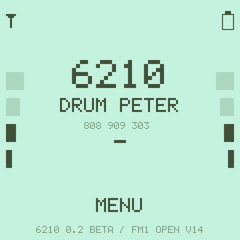
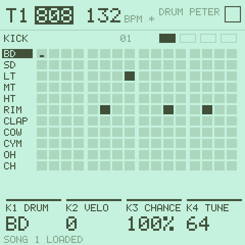
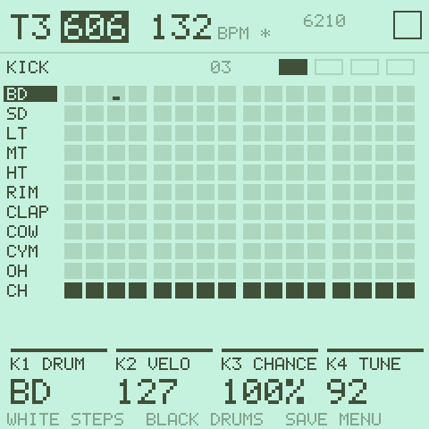
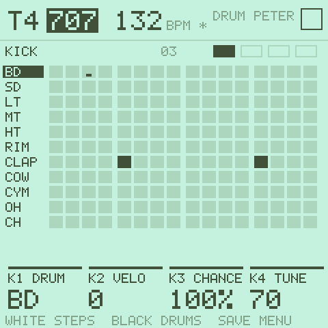
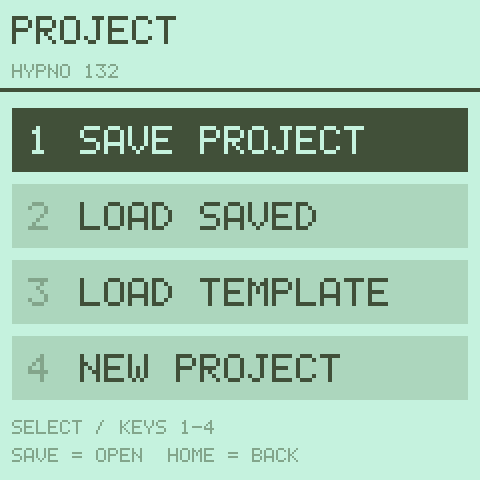
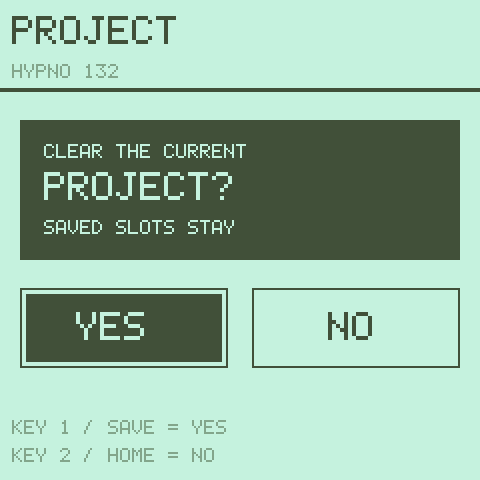
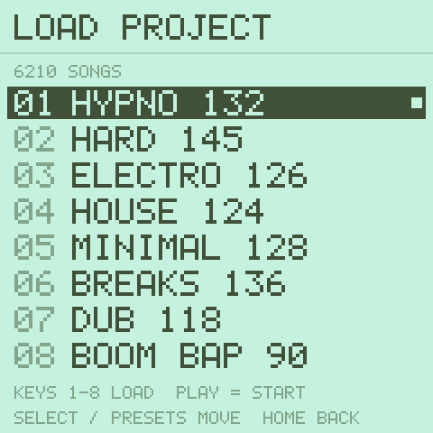
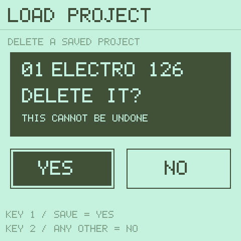

What's inside
Everything a drum machine should do first, on the FM-1's own keys, knobs and screen. It runs on the FM1 Open V14 engine, so timing stays sample accurate.
Four kits
Track 1 808, track 2 909, track 3 606, track 4 707. Eleven drums each: BD, SD, three toms, rim, clap, cowbell, cymbal, open and closed hat.
Eight songs
Hypno, hard techno, electro, house, minimal, breaks, dub and boom bap, built in. Song 1 is loaded the first time you switch on.
Project menu
SAVE asks what you want: save, load a saved project, load a template song, or start a new empty project. Deleting a save and clearing a project both ask YES / NO first.
TR step keys
The 16 white keys are the steps of the selected drum. Black keys pick a drum and play it.
Blink codes
Every light has a rhythm: playhead, beat, record, unsaved, muted, roll. You can read the machine without looking at the screen.
Velocity and chance
K2 sets the step's velocity (accent at 120 and up), K3 gives it a chance to play from 12% to 100%.
Up to 64 steps
Each track loops over 16, 32, 48 or 64 steps. OCT − and + page through them.
Roll
ARP on a drum track is a drum repeat: hold a drum key and it rolls. Rate, swing and hold on the ARP page.
Mixer
Mute and solo on the keys, the four kit volumes on the knobs. A muted track keeps double flashing so you never forget it.
Screens
240 × 240 pixels, two shades of green, no phone maker's logo. All pictures below come from the firmware's own drawing code.










Blink codes
The FM-1's button lights are on or off, there is no dimming. So every state gets its own rhythm instead of a brightness. Try it on the panel below: press the buttons and keys, switch pages, start and stop.
The same codes, one by one:
| Light | Rhythm | Means |
|---|---|---|
| Step key | Steady | The selected drum plays on this step. |
| Step key | Runs across the keys | Playhead. An empty step lights for half a sixteenth; a set step blinks off for a moment. |
| Step key | 2 Hz while stopped | The step you are editing (K2 and K3 change it). |
| Black key | Steady, flashes on hits | The selected drum. Any other drum's key flashes when it plays. |
| PLAY | First third of each beat, longer on beat 1 | Playing, and where the bar starts. Slow blink when paused. |
| REC | 8 Hz | Recording. |
| SAVE | 1 Hz | The project has edits that are not saved yet. |
| GLO | Double flash every bar | At least one track is muted or soloed. On the mixer, muted tracks' keys double flash too. |
| ARP | Every sixteenth | Roll (drum repeat) is on. |
| OCT − / + | Steady | There is another page of steps that way. |
Install in five minutes
In desktop Chrome or Edge, over USB. The original V15 firmware is inside the installer, so you can always go back.
Back up
Export the projects, voices and samples you want to keep.
Connect
Switch the FM-1 on and plug it straight into the computer with a USB data cable.
Install
Open the installer page, press START and follow it. Coming from stock V15, enable force flash once.
Play
The FM-1 restarts into 6210. Press PLAY: on an empty project song 1 is already loaded.
Good to know
Engine limits
The sequencer and the sound engine are M-VAVE's FM1 Open V14 library. Four drum tracks, each looping over 16, 32, 48 or 64 steps; tracks 5–8 are off.
909, 606 and 707
There is one drum engine, the DRUM 808. The 909, 606 and 707 kits are settings of it, saved with your project like any sound.
Lights are on or off
The panel cannot dim a light, so dim and bright states are shown as rhythms instead.
Drums only
The DX7, 303, PSG and pluck editors were removed to make room. The step editor, drum sound editor, FX, mixer, MIDI and the arpeggiator stay.